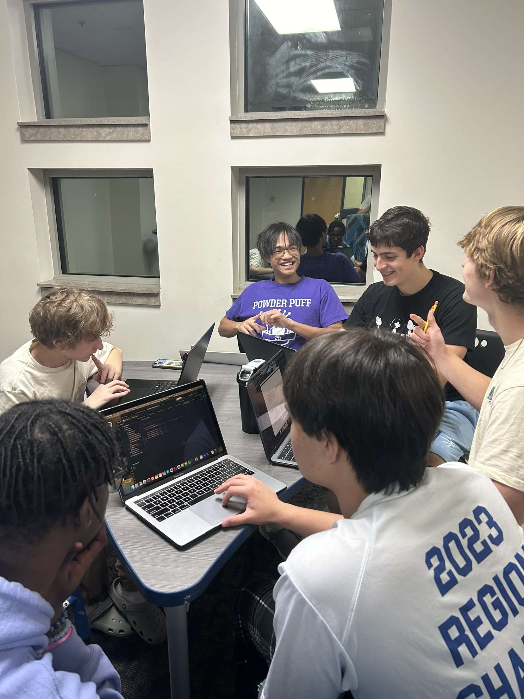

GSSM Computer Science Clubs
Competitive Programming
The Competitive Programming Club is a group of students dedicated to enhancing their problem-solving and coding skills by participating in programming contests such as LeetCode competitions, Codeforces, and other international competitions. The community is full of students at various skill levels who can engage in learning how to solve algorithmic problems, collaborate on challenging questions, and prepare for competitions in an informal, yet motivated environment.
Members practice a variety of coding challenges focusing on algorithms and data structures. The club hosts regular meetings where students practice problems and review solutions to past contest problems.
With a focus on inclusivity, the club welcomes everyone, from beginners to more experienced coders, providing a platform for all to improve and learn from each other. Through the community, members gain valuable experience in logical reasoning, collaboration, and algorithm design, creating a strong foundation for future academic and career goals in computer science.
Game Development
The Game Development Club is a collaborative club where students with a passion for coding and creativity come together to create engaging games for a broad user base. In this club, members can explore all aspects of game development, including coding, graphic design, and game mechanics. Students work together to bring games to life by using programming skills and design tools to create games that are not only enjoyable but also accessible and challenging.
The club’s environment promotes a hands-on approach to learning game development by building games from initial concept to final release which give members real-world experience in teamwork, project management, and iterative design. Additionally, club members have the opportunity to showcase their work, receive feedback, and inhance their skills, building a portfolio of games that demonstrates thier skills.

Computer Surgery
The Computer Surgery Club is a hands-on initiative dedicated to exploring the inner workings of computer hardware and learning how to diagnose, repair, and upgrade various components. Members gain practical experience disassembling and reassembling computers, understanding the roles of key parts like the motherboard, CPU, RAM, and storage devices. The club also dives into setting up and configuring BIOS, ensuring systems run efficiently and troubleshooting hardware issues. By providing opportunities to work directly with physical machines, the club fosters a deeper understanding of what makes computers function and equips participants with valuable skills for maintaining and repairing them.
Computer Science
The Computer Science Club is a collaborative space where students come together to work on exciting projects that enhance programming skills and explore new concepts and technologies. By tackling challenging and creative endeavors, members build their technical knowledge while learning to think critically and solve problems as a team. Current projects include building a chatbot using Python libraries, designing a simple operating system to understand low-level computing concepts, and developing an AI image classifier to delve into machine learning and computer vision. These projects allow members to experiment with various tools and frameworks, grow their expertise, and foster a community of innovation and curiosity.
Women in Computer Science (WOMPSCI)
Women in Computer Science (WOMPSCI) is a club dedicated to fostering the growth and empowerment of women in the field of computer science. The club provides a supportive environment where members can explore their interests, develop technical skills, and build confidence in a traditionally underrepresented field. Through collaborative projects, WOMPSCI offers valuable learning opportunities and encourages members to tackle challenges in programming, data science, and technology. Beyond skill development, the club focuses on creating a strong community that inspires collaboration, mentorship, and the celebration of achievements in computer science.